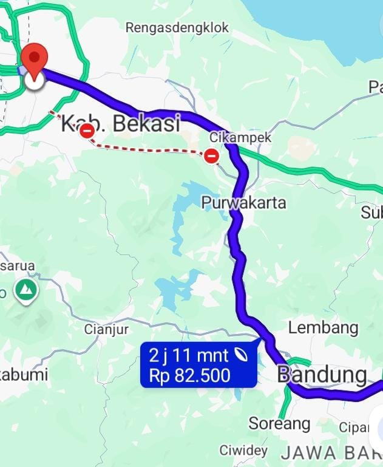

Pengiriman Barang Bandung Bekasi Express 1 Hari Sampai: Pilihan Layanan Cepat Lion Parcel

Kebutuhan pengiriman barang dari Bandung ke Bekasi terus menjadi bagian penting dalam aktivitas perdagangan, bisnis online, distribusi produk, hingga kebutuhan pribadi. Jarak antara kedua wilayah ini relatif dekat jika dibandingkan dengan pengiriman antarpulau, sehingga banyak pelanggan mencari layanan ekspedisi yang cepat dan praktis.
Tidak sedikit pelanggan yang membutuhkan pengiriman barang Bandung Bekasi express dengan target waktu sekitar satu hari kerja. Kebutuhan tersebut biasanya muncul ketika mengirim dokumen penting, perlengkapan usaha, sampel produk, pakaian, suku cadang, maupun barang dagangan yang harus segera diterima.
Salah satu pilihan yang dapat dipertimbangkan adalah Lion Parcel. Perusahaan ekspedisi ini menyediakan beberapa jenis layanan pengiriman dengan estimasi waktu berbeda, termasuk layanan prioritas dan layanan VIP untuk kebutuhan pengiriman yang lebih cepat.
Lalu, bagaimana cara mengirim barang dari Bandung ke Bekasi dengan layanan cepat? Apa saja pilihan layanan Lion Parcel dan hal yang perlu diperhatikan sebelum mengirim paket?
Butuh Pengiriman Cepat Bandung ke Bekasi?
Ingin mengetahui ketersediaan layanan express, estimasi waktu, dan ongkos kirim dari Bandung menuju Bekasi? Konsultasikan terlebih dahulu dengan Lion Parcel Bandung POS101.
💬 Chat WhatsApp 0851-8309-04861. Pengiriman Barang dari Bandung ke Bekasi, Mengapa Membutuhkan Layanan Express?
Bandung dan Bekasi merupakan dua wilayah dengan aktivitas ekonomi yang cukup tinggi. Bandung dikenal dengan berbagai sektor perdagangan, industri kreatif, konveksi, tekstil, dan produk UMKM. Sementara itu, Bekasi memiliki kawasan industri, pergudangan, perdagangan, serta kawasan permukiman yang berkembang pesat.
Hubungan perdagangan dan aktivitas bisnis antara kedua wilayah tersebut membuat kebutuhan pengiriman barang menjadi cukup beragam.
Beberapa jenis pengiriman yang sering membutuhkan layanan cepat antara lain:
- Produk konveksi dan pakaian: Pengiriman pakaian jadi, sampel produk, seragam, dan kebutuhan toko.
- Dokumen bisnis: Berkas administrasi, dokumen perusahaan, dan kebutuhan pekerjaan.
- Suku cadang: Komponen mesin dan perlengkapan usaha yang dibutuhkan untuk mendukung operasional.
- Produk UMKM: Barang dagangan yang perlu segera dikirim kepada pelanggan.
- Perlengkapan elektronik: Komponen dan aksesori elektronik yang memenuhi ketentuan pengiriman.
Bagi pelaku usaha, kecepatan pengiriman dapat membantu memperlancar distribusi barang dan menjaga kepuasan pelanggan. Oleh karena itu, pemilihan layanan ekspedisi sebaiknya disesuaikan dengan tingkat urgensi barang.
2. Pilihan Layanan Cepat Lion Parcel untuk Pengiriman Bandung Bekasi
Lion Parcel mempunyai beberapa pilihan layanan yang dapat digunakan untuk kebutuhan pengiriman domestik. Setiap layanan memiliki karakteristik dan estimasi waktu yang berbeda.
BOSSPACK: Layanan Pengiriman Prioritas
BOSSPACK merupakan layanan prioritas Lion Parcel yang ditujukan untuk pelanggan yang membutuhkan pengiriman lebih cepat.
Informasi layanan resmi Lion Parcel mencantumkan estimasi BOSSPACK sekitar 1–2 hari sampai. Layanan ini dapat menjadi salah satu pilihan untuk pelanggan yang ingin mengirimkan barang dari Bandung menuju Bekasi.
Namun, estimasi tersebut bukan berarti seluruh pengiriman pada rute Bandung–Bekasi otomatis selesai dalam satu hari. Waktu pengiriman tetap mengikuti ketersediaan layanan, kota asal dan tujuan, serta ketentuan operasional.
REGPACK: Pengiriman Reguler
REGPACK merupakan pilihan pengiriman reguler untuk kebutuhan pengiriman paket sehari-hari.
Estimasi layanan reguler yang dicantumkan pada informasi produk Lion Parcel adalah sekitar 2–3 hari sampai. Layanan ini bisa dipertimbangkan apabila barang tidak terlalu mendesak dan pelanggan ingin memilih layanan reguler.
VIPPACK: Pengiriman VIP Kurang dari 24 Jam
Lion Parcel juga mempunyai VIPPACK, yaitu layanan pengiriman VIP antarkota dan antarpulau dengan waktu kurang dari 24 jam.
Ada ketentuan penting yang perlu dipahami: pengiriman VIPPACK dilakukan dengan pengambilan barang di bandara kota tujuan. Karena itu, mekanismenya berbeda dengan pengiriman reguler yang mengantarkan barang langsung ke alamat penerima.
Pelanggan perlu memastikan ketersediaan layanan dan mekanisme pengambilan sebelum menggunakan pilihan ini.
Catatan estimasi pengiriman:
Estimasi BOSSPACK, REGPACK, dan VIPPACK merupakan informasi layanan secara umum. Estimasi khusus Bandung–Bekasi perlu diperiksa berdasarkan alamat lengkap, jadwal operasional, serta layanan yang tersedia ketika transaksi dilakukan.
3. Apakah Pengiriman Bandung Bekasi Bisa Sampai dalam 1 Hari?
Pertanyaan ini cukup sering muncul dari pelanggan yang membutuhkan pengiriman barang secara cepat.
Secara layanan, Lion Parcel memiliki produk pengiriman prioritas dengan estimasi 1–2 hari dan layanan VIPPACK kurang dari 24 jam. Akan tetapi, kepastian pengiriman dalam satu hari untuk rute Bandung menuju Bekasi tidak boleh disimpulkan hanya berdasarkan nama layanan.
Ada beberapa faktor yang dapat memengaruhi waktu sampainya barang:
- Waktu penyerahan paket: Paket yang diserahkan setelah batas penerimaan operasional bisa diproses pada jadwal berikutnya.
- Alamat penerima: Lokasi tujuan di pusat kota dan kawasan yang lebih jauh dapat mempunyai proses pengantaran berbeda.
- Ketersediaan layanan: Tidak semua jenis layanan tersedia untuk setiap kombinasi kota dan kode pos.
- Hari operasional: Hari Minggu dan hari libur nasional dapat memengaruhi perhitungan estimasi layanan tertentu.
- Kondisi operasional: Cuaca, gangguan transportasi, dan periode lonjakan pengiriman dapat memengaruhi perjalanan barang.
Karena itu, pelanggan yang membutuhkan pengiriman Bandung–Bekasi dalam satu hari sebaiknya melakukan pengecekan terlebih dahulu sebelum menyerahkan barang.
4. Jenis Barang yang Bisa Dikirim dari Bandung ke Bekasi
Pengiriman dari Bandung menuju Bekasi dapat digunakan untuk berbagai kebutuhan pribadi maupun bisnis.
Beberapa contoh barang yang dapat dikirim sepanjang memenuhi ketentuan Lion Parcel antara lain:
- Pakaian, celana, dan produk konveksi.
- Sepatu, tas, dan aksesori.
- Dokumen dan perlengkapan administrasi.
- Produk UMKM dan barang dagangan.
- Peralatan rumah tangga yang memenuhi ketentuan ukuran dan keamanan.
- Suku cadang dan komponen mesin yang tidak termasuk barang terlarang.
- Perlengkapan elektronik yang memenuhi ketentuan pengiriman.
Sebelum mengirim, pastikan barang telah dikemas dengan baik. Barang mudah pecah, barang bernilai tinggi, baterai, cairan, bahan kimia, dan barang yang berpotensi masuk kategori Dangerous Goods perlu dikonsultasikan terlebih dahulu dengan petugas agen.
Pelanggan juga sebaiknya memeriksa ketentuan barang yang dilarang atau dibatasi melalui informasi resmi Lion Parcel.
📍 Lokasi Lion Parcel Bandung POS101 Nanjungmekar
Ingin mengirim barang dari Bandung menuju Bekasi? Anda dapat berkonsultasi melalui Lion Parcel Bandung POS101 yang berlokasi di Nanjungmekar, Rancaekek, Kabupaten Bandung.
Jl. Raya Barat Cicalengka RT 1 RW 1, Nanjung Mekar, Rancaekek, Kabupaten Bandung, Jawa Barat.
5. Cara Mengirim Barang dari Bandung ke Bekasi Melalui Lion Parcel
Bagi pelanggan yang belum pernah menggunakan Lion Parcel, proses pengiriman dapat dimulai dengan beberapa langkah sederhana.
- Siapkan barang yang akan dikirim. Pastikan barang sudah diperiksa dan dikemas dengan aman.
- Siapkan alamat penerima. Tuliskan nama penerima, nomor telepon aktif, alamat lengkap, kecamatan, kota, dan kode pos di Bekasi.
- Tentukan berat dan ukuran paket. Informasi ini diperlukan untuk membantu perhitungan ongkos kirim.
- Tanyakan pilihan layanan. Sampaikan bahwa Anda membutuhkan pengiriman cepat dari Bandung ke Bekasi. Petugas dapat membantu memeriksa pilihan layanan yang tersedia.
- Lakukan transaksi pengiriman. Setelah tarif dan pilihan layanan disepakati, paket dapat diproses sesuai prosedur.
- Simpan nomor resi. Nomor resi digunakan untuk memantau perjalanan paket hingga diterima oleh penerima.
6. Faktor yang Memengaruhi Ongkos Kirim Bandung ke Bekasi
Ongkos kirim tidak selalu sama untuk setiap paket. Ada beberapa faktor yang memengaruhi biaya pengiriman dari Bandung menuju Bekasi.
- Berat aktual: Berat paket yang ditimbang saat proses pengiriman.
- Berat volumetrik: Ukuran paket dapat memengaruhi perhitungan berat berdasarkan ketentuan layanan.
- Jenis layanan: Layanan prioritas dan reguler memiliki tarif berbeda.
- Alamat tujuan: Kode pos dan wilayah penerima dapat memengaruhi tarif.
- Asuransi: Perlindungan tambahan dapat memengaruhi biaya apabila digunakan.
Untuk memperoleh tarif yang sesuai, pelanggan sebaiknya menyiapkan informasi berat, dimensi, dan alamat tujuan secara lengkap sebelum meminta pengecekan ongkos kirim.
7. Tips Agar Pengiriman Barang Bandung Bekasi Lebih Lancar
Selain memilih layanan yang tepat, persiapan paket juga berperan penting dalam kelancaran pengiriman.
- Gunakan kardus atau kemasan yang sesuai dengan karakter barang.
- Tambahkan pelindung seperti bubble wrap untuk barang yang rentan pecah.
- Pastikan alamat dan nomor telepon penerima benar.
- Hindari menyerahkan paket terlalu dekat dengan batas waktu operasional jika membutuhkan pengiriman cepat.
- Gunakan layanan asuransi sesuai kebutuhan dan ketentuan yang berlaku.
- Simpan bukti transaksi dan nomor resi sampai paket diterima.
Persiapan yang baik dapat membantu mengurangi risiko kerusakan, kesalahan alamat, dan kendala selama proses pengiriman.
8. Konsultasi Pengiriman Bandung Bekasi di Lion Parcel POS101 Rancaekek
Bagi masyarakat yang berada di sekitar Rancaekek, Nanjungmekar, Cicalengka, dan wilayah Bandung Timur, kebutuhan pengiriman barang ke Bekasi dapat dikonsultasikan melalui Lion Parcel Bandung POS101.
Anda dapat menanyakan beberapa informasi sebelum mengirimkan barang, seperti:
- Ketersediaan layanan pengiriman cepat menuju Bekasi.
- Estimasi waktu berdasarkan kode pos penerima.
- Perkiraan ongkos kirim berdasarkan berat dan ukuran barang.
- Ketentuan barang yang dapat dan tidak dapat dikirim.
- Prosedur pengiriman untuk kebutuhan pribadi maupun bisnis.
Dengan melakukan pengecekan terlebih dahulu, pelanggan dapat memilih layanan yang sesuai dengan kebutuhan dan anggaran pengiriman.
Kesimpulan
Pengiriman barang dari Bandung ke Bekasi membutuhkan pilihan ekspedisi yang sesuai dengan tingkat urgensi dan karakteristik barang.
Lion Parcel menyediakan beberapa pilihan layanan, termasuk BOSSPACK dengan estimasi umum 1–2 hari dan VIPPACK dengan layanan kurang dari 24 jam yang memiliki mekanisme pengambilan di bandara kota tujuan.
Untuk kebutuhan pengiriman express Bandung–Bekasi, pelanggan perlu memastikan ketersediaan produk layanan dan estimasi berdasarkan alamat penerima sebelum melakukan transaksi. Dengan begitu, pengiriman dapat direncanakan secara lebih tepat.
Bagi masyarakat Bandung Timur, Lion Parcel Bandung POS101 Nanjungmekar Rancaekek siap membantu memberikan informasi mengenai kebutuhan pengiriman paket dan barang ke Bekasi maupun berbagai kota lainnya sesuai jangkauan layanan.
📚 Sumber Informasi dan Referensi
Informasi layanan dan estimasi pengiriman dalam artikel ini disusun berdasarkan referensi berikut:
-
Website Resmi Lion Parcel.
Informasi berbagai produk dan layanan pengiriman.
Lihat produk layanan Lion Parcel -
Lion Parcel ERP.
Informasi layanan BOSSPACK, REGPACK, JAGOPACK, VIPPACK, dan estimasi pengiriman.
Lihat informasi layanan Lion Parcel -
Lion Parcel.
Informasi program PASTI (Paket Telat Sehari, Ongkir Diganti) beserta ketentuannya.
Lihat informasi program PASTI -
Lion Parcel.
Informasi umum layanan dan pengiriman paket.
Website resmi Lion Parcel
Catatan: Estimasi pengiriman dapat berbeda berdasarkan kota asal, kode pos tujuan, jenis layanan, waktu penyerahan paket, dan ketentuan operasional. Informasi ketersediaan layanan serta tarif perlu dikonfirmasi sebelum transaksi.
Nama Agen: Lion Parcel Bandung POS101 Nanjungmekar Rancaekek
Jam Operasional: Senin–Minggu, 08.00–20.00 WIB
Alamat: Jl. Raya Barat Cicalengka RT 1 RW 1, Nanjung Mekar, Rancaekek, Kabupaten Bandung
WhatsApp: 0851-8309-0486